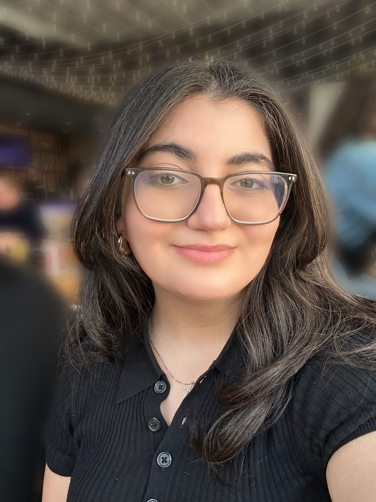

Olivia Polus
Education
High School:
St.Jean de Brebeuf Catholic Secondary School in Hamilton
University:
Industrial Automation Engineering at McMaster University
Work
Co-op's:
Engineering Co-op Student at Aspire Bakeries
- Used AutoCAD to create equipment layouts and floor plans with accuracy in design specifications that complied to the companies GMPs and Health and Safety rules.
- Worked with other departments and contractors while participating in regular project meetings that had discussions of design improvements and project timelines, which enhanced skills and understanding of project management.
- Assisted in conducting trials to evaluate the performance of different machinery and parts, compiling results and presenting findings to senior engineers to test efficiency.
Paid Job's:
Chaldean International Languages Teacher at HWCDSB
- Deliver daily programming that meets the requirements of 20-30 students while adhering to the school board's curriculum.
- Monitor 100+ students during recess, lunch, gym and school trips, while demonstrating awareness, and knowledge of emergency and safety procedures.
- Foster an inclusive and supportive learning environment by building strong relationships with students, encouraging participation, and supporting diverse language-learning needs.
Server at Staff Shop
- Demonstrate company mission, vision and values, by helping others with a smile and positive attitude, demonstrating company culture to other employees and clients.
- Maintain proper dining experience, while serving 1000+ people food during events like The Ride to Conquer Cancer fundraiser, ensuring that quality and health standards are met.
- Collaborate effectively with team members in a fast-paced environment to ensure timely service, smooth event operations, and a positive experience for both guests and staff.
Hobbies
Hobbies
- Reading:
I enjoy reading as a way to relax and continuously expand my knowledge across different topics and genres.
- Collecting CD's and DVD's:
I enjoy collecting CDs and DVDs, appreciating physical media and the storytelling and artistry behind music and film.
- Baking:
I enjoy baking as a creative outlet and take pride in preparing homemade treats for family and community events.
- Volunteering:
I am passionate about volunteering and giving back to the community through meaningful service and engagement.
Interests
- The Chaldean Language:
I am deeply interested in the Chaldean language and its preservation through education and cultural involvement.
- Travel:
I enjoy traveling to experience new cultures, perspectives, and traditions.
- Community Engagement:
I value community engagement and actively seek opportunities to connect with and support local initiatives.
Professional Associations:
- The Bachelor of Technology Association:
I am an active member of the Bachelor of Technology Association, engaging in professional development and networking opportunities.
Clubs:
- Book Club:
I participate in a book club to engage in thoughtful discussions and explore diverse literature.